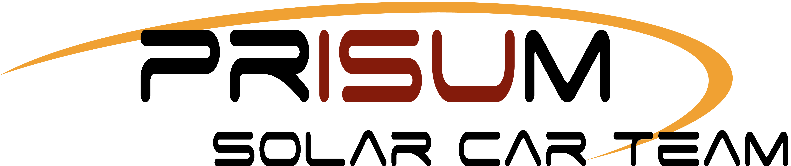
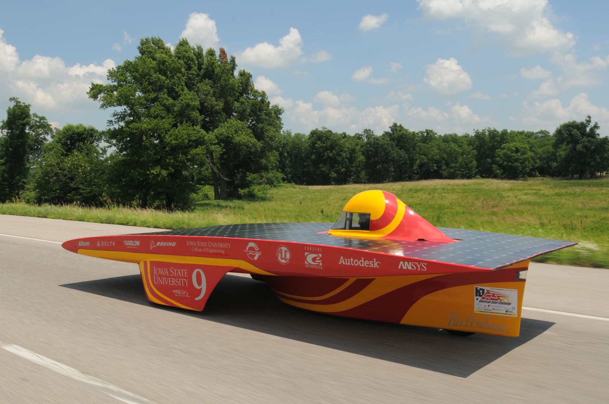

Iowa State University's Solar Car Team
About the Project

PrISUm is Iowa State University's student-run club which designs, builds, and races solar-powered electric vehicles. Throughout my time at Iowa State, I immersed myself in PrISUm and was responsible for all mechanical system and component projects as the Mechanical Director. I had the privilege of helping tackle all mechanical system design challenges with a great team of friends. During my tenure as Mechanical Director, I repeatedly found myself stretched beyond my abilities, often requiring that I teach myself higher-level class material prior to taking the relevant course.
Check out my Flickr gallery with some pictures of my time on the team: Click Here.
Be sure to check out the team's website, too - it's exciting to see the advancement in technology over the years! PrISUm's website: https://www.prisum.iastate.edu/
Skills Involved
- Body design and aerodynamic analysis with CFD
- Structural component design and analysis with FEA
- Vastly increased knowledge of materials: steel, aluminum, plastics, composites
- Managed a diverse group of student volunteers
- Project scheduling and meeting deadlines
- Accelerated my proficiency in design and manufacturing methods
- Brand advocacy
Learn More
Although I no longer actively work on the project, current and future teams are still working hard to push the boundaries of what is possible with solar-powered transportation. I urge you to get involved, donate to the team, or even just spread the word in order to assist these bright students as they progress this outstanding technology.
Check out the current team's progress at: https://www.prisum.iastate.edu/